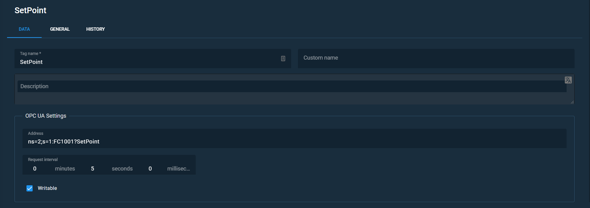

Create an OPC UA tag#
After completing this task, you will be able to create OPC UA tags.
- Enter the OPC UA device.
-
Click the Create OPC UA tag icon. You will see the following menu.
 Figure 1. Tag configuration menu -
Name the tag in the Tag name field, and set the Custom name and Description if necessary.
Important
It is obligatory to fill the Tag name field.
-
Configure OPC UA settings in the same-named section.
4.1. Set the device's address:
ns=2;s=1:FC1001?SetPoint. Where:ns=2;s=1:is the NodeIdFC1001?SetPointare device and tag names.
Note
Read OPC Unified Architecture Specification Part 3: Address Space Model for more information about addressing model of OPC UA.
4.2. Set the request interval so the device would request data from the tag every 5 seconds.
Related articles:
- OPC UA devices
OPC UA devices and their parameters. - OPC UA tag editor
This article is about OPC UA tags and their parameters which you can change in the editor. - Tag general settings
In this article, you can find short descriptions of tag general settings. - Tag history settings
Briefly about History settings menu. - View tags
You can read about settings of tags and alarms in this article.
Related task
- Create an OPC UA device
This task will help you with creating an OPC UA device.